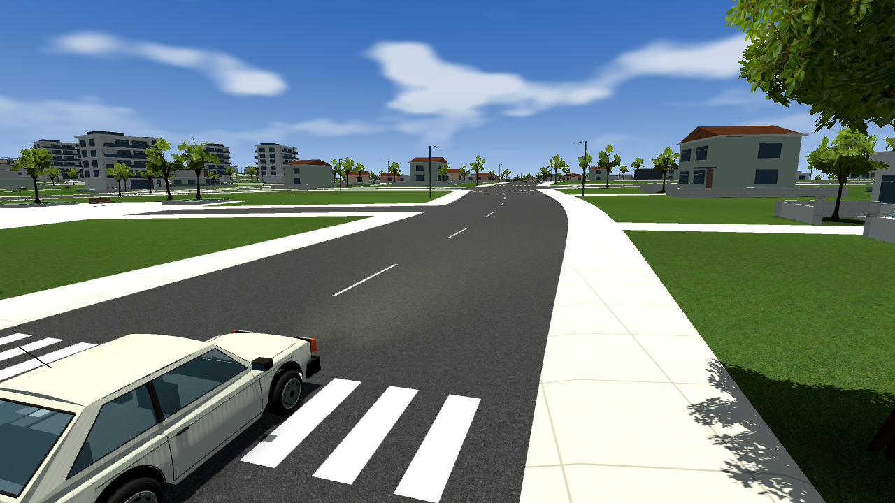
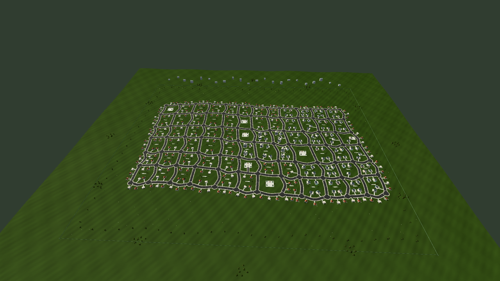
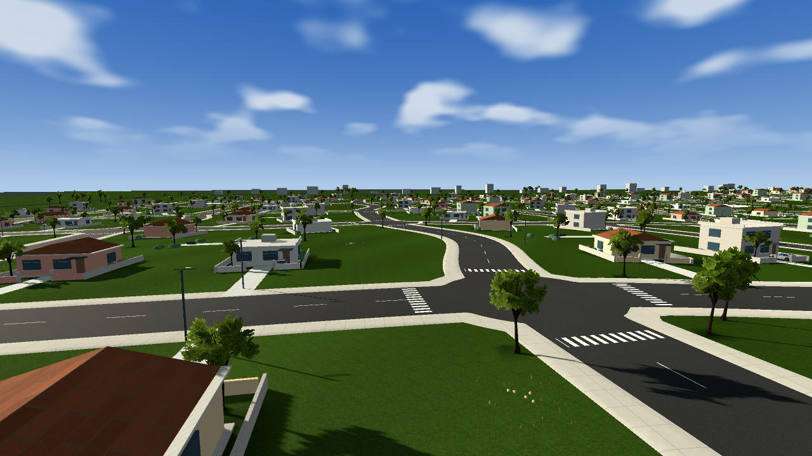
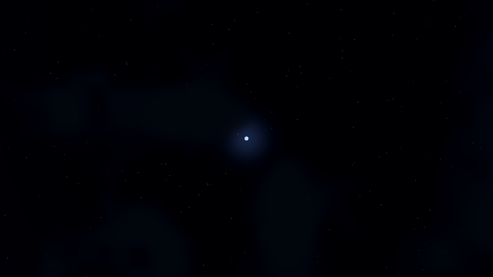
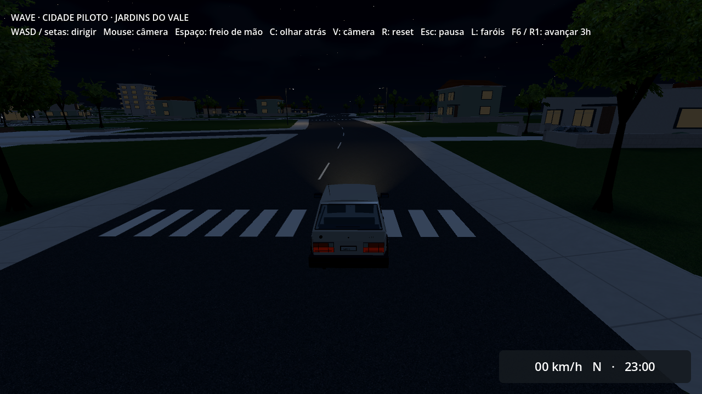
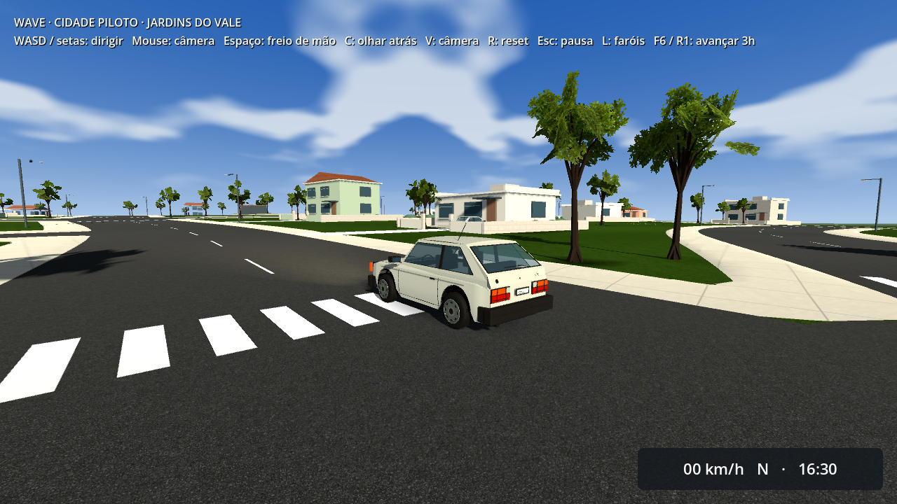

Jardins do Vale · bairro ampliado e ciclo de dia/noite
72 quarteirões · 1.892.352 m². Quatro vezes a área do bairro anterior. Os botões mostram capturas da mesma câmera em diferentes horários do ciclo implementado.

Dia · 12:00
No jogo, o dia completo dura 24 minutos reais. F6 ou R1 avança três horas; L ou L1 alterna os faróis. A pausa congela o relógio e as nuvens.
Escala do bairro

Mapa salvo offline. Há seis praças, zonas com diferentes tipos de imóveis, vales e colinas. Nesta inspeção estática, névoa e descarte por distância foram desligados para mostrar a geometria.
Áreas do bairro

Lua e estrelas

Câmera real do build exportado · noite

Câmera real do jogo

As outras capturas usam câmeras de inspeção; esta usa a câmera e HUD do jogo. As imagens não medem FPS. Contexto e limites da captura.